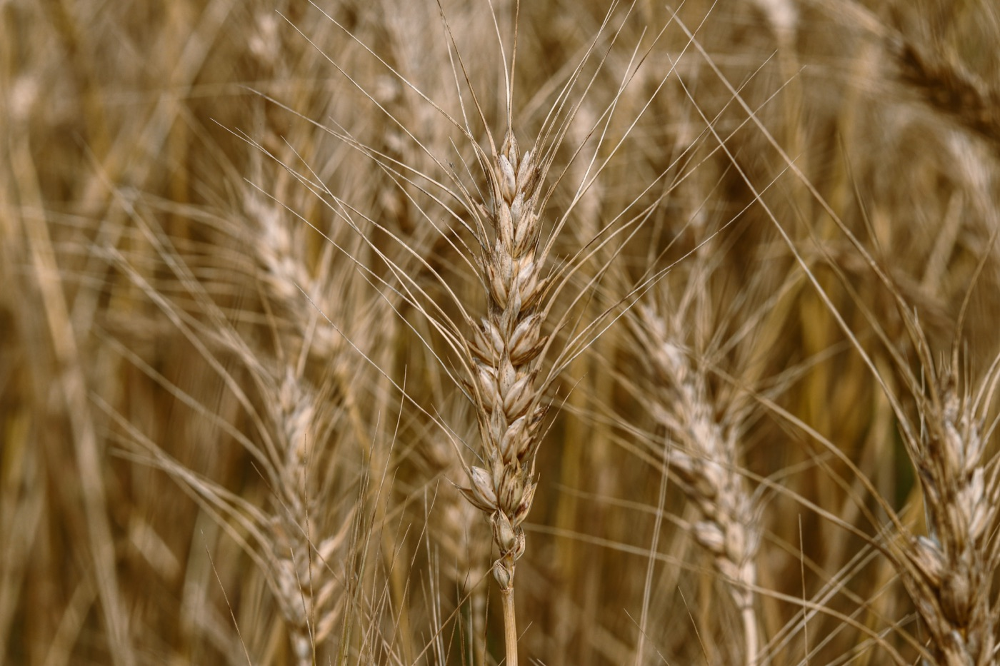

Tilletia caries · Tilletia laevis
Un hongo que viaja escondido en la semilla, se desarrolla en silencio dentro de la planta y solo se delata en la espiga: por el olor a pescado descompuesto de sus esporas. Este expediente reúne su biología, diagnóstico y el marco de control fitosanitario que lo mantiene fuera de las zonas libres de México, dividido en ocho fichas independientes.

Ocho fichas del expediente — cada una abre en su propia página
→ Bibliografía completa · 11 fuentes citadas a lo largo del expediente